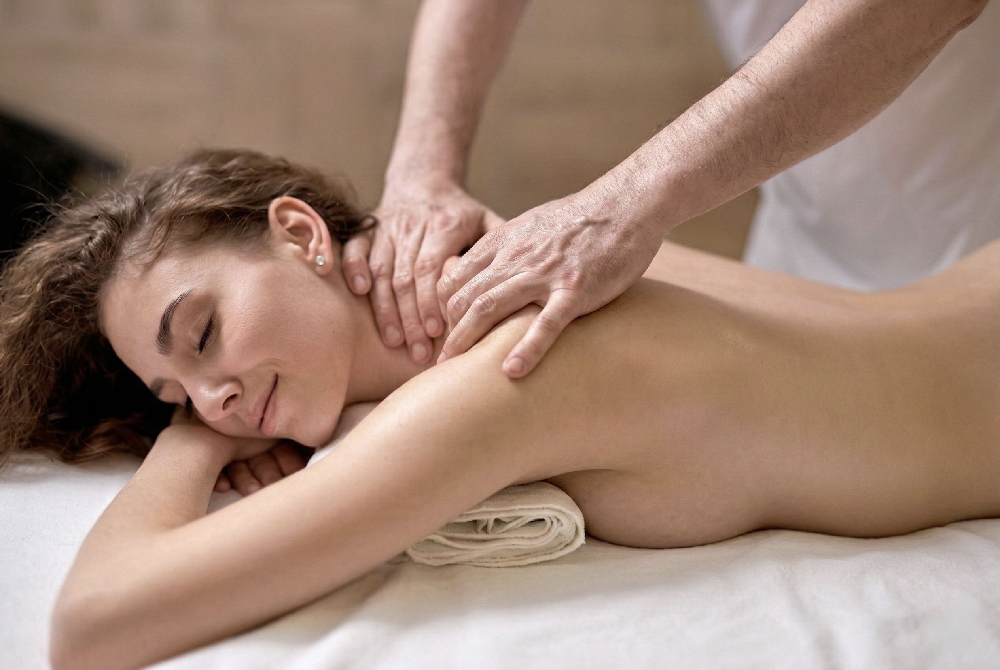

Helyreállított egyensúly
Csontkovácsolás

Gerinc- és Ízületkezelés
Fájdalommentes mozgás
Tradicionális Csontkovácsolás
A csontkovácsolás célja a gerinc, az ízületek és a teljes mozgásszervi rendszer statikai hibáinak feltérképezése és helyreállítása. Egy rossz mozdulat, az ülőmunka vagy a felhalmozódott stressz könnyen vezethet ízületi blokkokhoz és izomfeszültséghez.
Miben segít a kezelés?
- Derék-, hát- és nyakfájdalmak enyhítése
- Becsípődések, ízületi blokkok szakszerű oldása
- A testtartás és a gerinc statikájának javítása
- Nyaki eredetű fejfájás és migrén kezelése
A kezelés minden esetben alapos állapotfelméréssel és izomlazító masszázzsal kezdődik, hogy a test felkészüljön a korrekciós mozdulatokra. Biztonságos, célzott és hatékony módszer a mozgás szabadságának visszanyerésére.